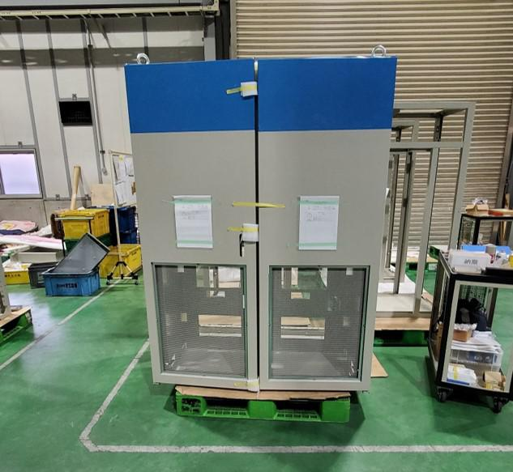
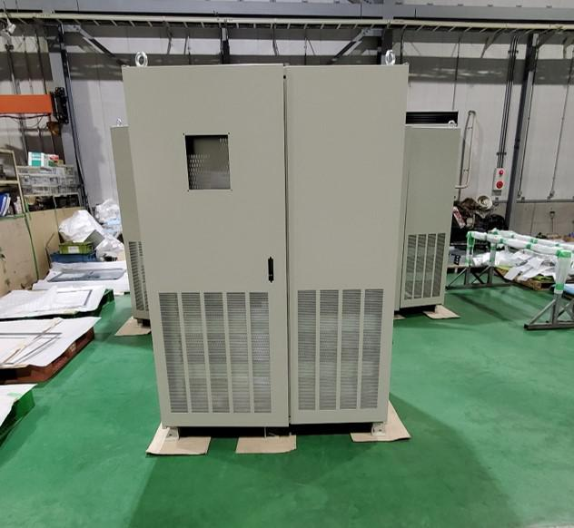
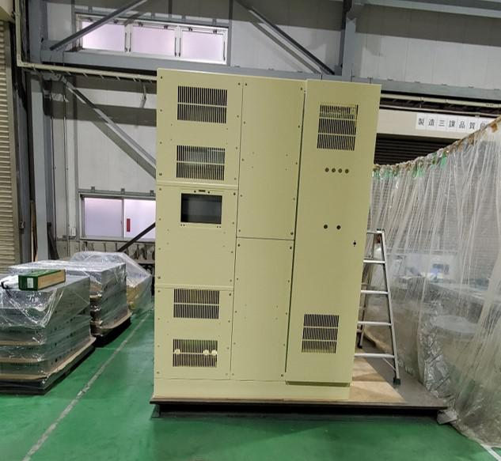
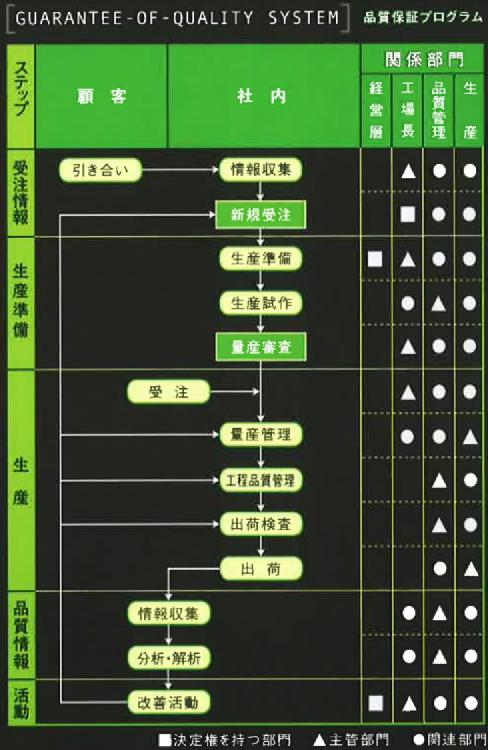
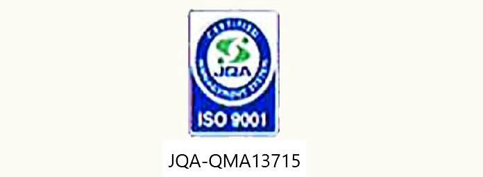
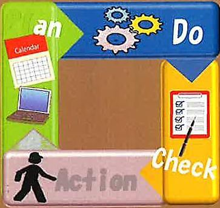
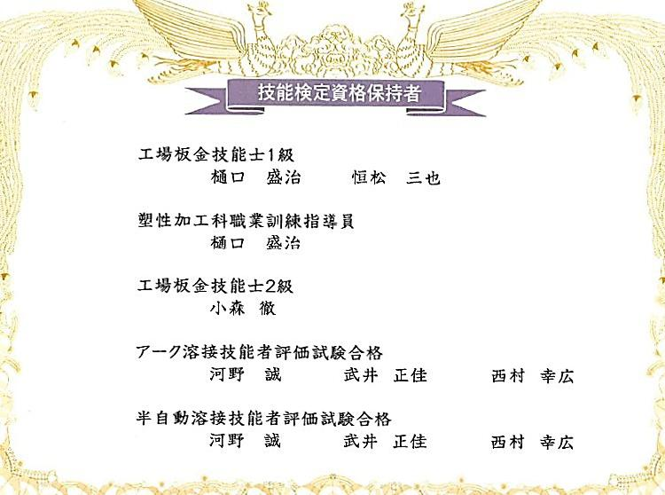

筐体・機構部品に対応
機構部品、筐体、カバー、シャーシなど、産業機器まわりの板金製品を製作します。
STRENGTH
1970年に板金加工業として創業。1981年に精密板金加工へ参入し、2002年には埼玉県入間市中神に新工場を設立しました。 生産管理システム、工程統合機、ベンディングロボットなど、工程の合理化と標準化に継続して取り組んでいます。
受注情報や2次元・3次元設計データをスピーディに取り込み、現場の加工工程へつなげる体制を整えています。
機構部品、筐体、カバー、シャーシなど、産業機器まわりの板金製品を製作します。
小型筐体から大型筐体まで、製品サイズや仕様に合わせた加工工程を選定します。
IGES、DXF、STEP、DRAWINGなどの互換性がある設計環境を活用します。
塗装、メッキ、スクリーン印刷を含む表面処理にも対応します。
PRODUCTS
現行サイトに掲載されている製品写真を、サイズ感と用途が伝わる見せ方に再構成しています。

産業機器向けの筐体・カバー類。外観、構造、組付けを考慮して製作します。

大きさのある筐体でも、加工工程と品質確認を組み合わせて対応します。

大型筐体の加工実績を、発注判断しやすいサイズ情報とともに掲載します。

PROCESS / NETWORK
インターネットを活用した2次元および3次元設計データのダイレクトインポートをはじめ、 スピーディな受注情報のキャッチを実現します。
2次元・3次元データを確認します。
パンチ・レーザ複合機、レーザ加工機などで加工。
プレスブレーキ、YGAレーザ、スポット溶接などを活用。
塗装、メッキ、スクリーン印刷を含めて確認。
EQUIPMENT
アマダ製設備を中心に、ブランク加工、曲げ、溶接、圧入、バリ取り、検査、生産管理まで対応します。
アマダ / 5×10材料供給装置付
アマダ / 5×10高速シャトルテーブル付
12台 / 35t、40t、50t、80t、170t、200t
アマダ PSP500P / ロボット付
半自動 / アルゴン / スポット / スタッド
APC21 / 3次元CAD / ペーパーレス対応
QUALITY

2008年8月にISO 9001認定取得。品質マネジメントシステムを構築しています。

作業の標準化、合否判定基準の明確化、現場改善を継続しています。

工場板金技能士、溶接技能者評価試験合格者など、技能を持つ人材が製造を支えます。
COMPANY
埼玉県入間市中神の工場から、板金設計・精密板金加工・大型筐体加工に対応しています。
CONTACT
図面、設計データ、数量、材質、板厚、希望納期、表面処理の有無をお知らせください。